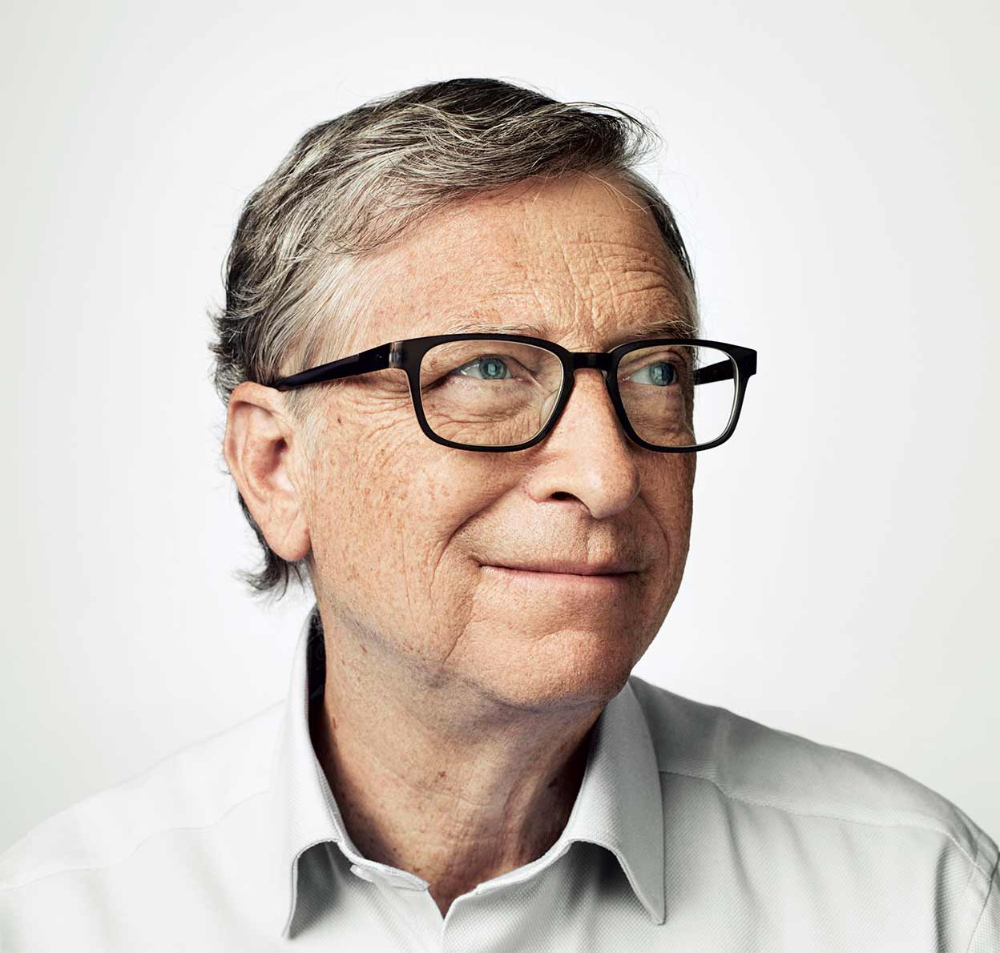
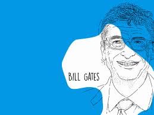

El talento de Gates se ha reflejado en múltiples programas informáticos,
cuyo uso se ha difundido por todo el mundo como lenguajes básicos de
los ordenadores personales; pero también en el éxito de una empresa
flexible y competitiva, gestionada con criterios heterodoxos y con una
atención especial a la selección y motivación del personal. Las
innovaciones de Gates contribuyeron a la rápida difusión del uso de la
informática personal, produciendo una innovación técnica
trascendental en las formas de producir, transmitir y consumir la
información. El presidente George Bush reconoció la importancia de la
obra de Gates otorgándole la Medalla Nacional de Tecnología en 1992.
Su rápido enriquecimiento ha ido acompañado de un discurso visionario
y optimista sobre un futuro transformado por la penetración de los
ordenadores en todas las facetas de la vida cotidiana, respondiendo al
sueño de introducir un ordenador personal en cada casa y en cada
puesto de trabajo; este discurso, que alienta una actitud positiva ante
los grandes cambios sociales de nuestra época, goza de gran audiencia
entre los jóvenes de todo el mundo por proceder del hombre que
simboliza el éxito material basado en el empleo de la inteligencia (su
libro Camino al futuro fue uno de los más vendidos en 1995).
detractores de Bill Gates, que también son numerosos, le
reprochan, no sin razón, su falta de creatividad (ciertamente su talento
y sus innovaciones no son comparables a las de un Steve Jobs, y más
bien siguió los caminos que abría el fundador de Apple), y critican
asimismo su política empresarial, afirmando que se basó siempre en el
monopolio y en la absorción de la competencia o del talento a golpe de
talonario. A los críticos les gusta subrayar un hecho totalmente real,
pese a que parezca una leyenda urbana: ni siquiera el MS-DOS es obra
suya. Bill Gates lo compró por 50.000 dólares a un programador de
Seattle llamado Tim Paterson, le cambió el nombre y lo entregó a IBM.
En la actualidad, Microsoft sigue siendo una de las empresas más
valiosas del mundo, pese a haber perdido diversas batallas,
especialmente la de Internet y la de los sistemas operativos para
teléfonos móviles, que lidera ahora Google (Sergei Brin y Larry Page),
otro gigante tan valioso como Microsoft. Frente al dinamismo de la era
de Internet, en la que surgen y se convierten rápidamente en
multimillonarias nuevas ideas como la red social Facebook, de Mark
Zuckerberg, la empresa de Gates parece haber quedado algo
anquilosada, aunque no se pone en duda la solidez de su posición.
Tampoco ello es exclusiva responsabilidad de Bill Gates, que ya en el
año 2000 cedió la presidencia ejecutiva de Microsoft a Steve Ballmer y
pasó a ser arquitecto jefe de software para centrarse en los aspectos
tecnológicos. Bill Gates había contraído matrimonio en 1994 con
Melinda French, con la que tendría tres hijos. En el año 2000 creó, junto
con su esposa, la Fundación Bill y Melinda Gates, institución benéfica
dedicada a temas sanitarios y educativos cuya espléndida dotación
económica procede mayormente de su fortuna personal. No en vano el
fundador de Microsoft es un habitual de las listas anuales de la
revista Forbes: en 2014 la había encabezado ya en quince ocasiones
como el hombre más rico del planeta.
2008, Bill Gates abandonó definitivamente Microsoft para dedicarse
íntegramente a sus labores en la fundación, que había recibido el
Premio Príncipe de Asturias de Cooperación Internacional en 2006. Si
antes fue una figura discutida, esta nueva etapa como filántropo
despierta más bien unánime admiración: al igual que lo fue su empresa,
su fundación es la más grande del mundo por lo que respecta a la
cuantía de sus aportaciones económicas a toda clase de programas de
ayuda, investigación y desarrollo. En 1986 Gates fue nombrado uno de los «50 solteros más codiciados»
por Good Housekeeping. Se casó con Melinda French el 1 de enero de
1994 y tuvieron tres hijos: Jennifer Katharine (1996), Rory John (1999) y
Phoebe Adele (2002). La familia reside en su casa en la ladera de una
colina con vistas al lago Washington, en Medina. En marzo de 2014, en
una entrevista de la revista Rolling Stone, Gates señaló que, en cuanto a
su fe, «los sistemas morales de la religión, creo, son super importantes.
Hemos criado a nuestros hijos de una manera religiosa». En la misma
entrevista, Gates dijo: «Creo que tiene sentido creer en Dios, pero
exactamente qué decisión en tu vida haces de manera diferente a causa
de ello, no lo sé». En otra entrevista a principios de 2014, Gates afirmó
que si el cielo existiera él estaría «gratamente sorprendido».19 Según
otras fuentes, Gates (que nació en el seno de una iglesia protestante),
es ahora fuertemente agnóstico. El 3 de mayo de 2021 anunció el fin de
su matrimonio con Melinda French, tras 27 años, mediante un mensaje
publicado en su cuenta personal de Twitter. Si bien ponen fin a su
relación personal, continuarán trabajando juntos en la Fundación Bill y
Melinda Gates. En noviembre de 2022 se hizo público que se
convertiría en abuelo por primera vez, debido a que su hija mayor
Jennifer se encontraba embarazada. Su primera nieta nació en marzo de
2023.
Desde 2008, año en que dejó de dirigir Microsoft, ha participado en
algunos proyectos para poder difundir este estilo de vida. En este
sentido, junto a Peter Thiel (cofundador de la empresa PayPal), ha
respaldado la creación de huevos artificiales a base de plantas fáciles de
cultivar. También aseguró, en una ocasión previa, que «el futuro de la
carne es vegano», lo cual va en sintonía con una propuesta que había
hecho para crear semillas transgénicas que tuviesen sabor a carne.
Desde 2007 Bill Gates ocupaba el segundo lugar en la lista anual de las
mayores fortunas personales realizada por la revista Forbes, detrás del
empresario mexicano Carlos Slim, pero debido a fluctuaciones en el
patrimonio de estos dos magnates, sus fortunas quedaron en 72 700 y
72 100 millones de dólares respectivamente, según el Bloomberg
Billionaires Index de mayo de 2013. En 1994, adquirió un manuscrito
de Leonardo da Vinci (el Códice Hammer, también llamado Códice
Leicester) por 30 millones de dólares.
En septiembre del 2019 Netflix lanzó una serie documental titulada "Bill
Gates bajo la lupa", dirigida por Davis Gunggenheim, que busca
entender como funciona el cerebro del creador de Microsoft.
El talento de Gates se ha reflejado en múltiples programas informáticos,
cuyo uso se ha difundido por todo el mundo como lenguajes básicos de
los ordenadores personales; pero también en el éxito de una empresa
flexible y competitiva, gestionada con criterios heterodoxos y con una
atención especial a la selección y motivación del personal. Las
innovaciones de Gates contribuyeron a la rápida difusión del uso de la
informática personal, produciendo una innovación técnica
trascendental en las formas de producir, transmitir y consumir la
información. El presidente George Bush reconoció la importancia de la
obra de Gates otorgándole la Medalla Nacional de Tecnología en 1992.
Su rápido enriquecimiento ha ido acompañado de un discurso visionario
y optimista sobre un futuro transformado por la penetración de los
ordenadores en todas las facetas de la vida cotidiana, respondiendo al
sueño de introducir un ordenador personal en cada casa y en cada
puesto de trabajo; este discurso, que alienta una actitud positiva ante
los grandes cambios sociales de nuestra época, goza de gran audiencia
entre los jóvenes de todo el mundo por proceder del hombre que
simboliza el éxito material basado en el empleo de la inteligencia (su
libro Camino al futuro fue uno de los más vendidos en 1995).
detractores de Bill Gates, que también son numerosos, le
reprochan, no sin razón, su falta de creatividad (ciertamente su talento
y sus innovaciones no son comparables a las de un Steve Jobs, y más
bien siguió los caminos que abría el fundador de Apple), y critican
asimismo su política empresarial, afirmando que se basó siempre en el
monopolio y en la absorción de la competencia o del talento a golpe de
talonario. A los críticos les gusta subrayar un hecho totalmente real,
pese a que parezca una leyenda urbana: ni siquiera el MS-DOS es obra
suya. Bill Gates lo compró por 50.000 dólares a un programador de
Seattle llamado Tim Paterson, le cambió el nombre y lo entregó a IBM.
En la actualidad, Microsoft sigue siendo una de las empresas más
valiosas del mundo, pese a haber perdido diversas batallas,
especialmente la de Internet y la de los sistemas operativos para
teléfonos móviles, que lidera ahora Google (Sergei Brin y Larry Page),
otro gigante tan valioso como Microsoft. Frente al dinamismo de la era
de Internet, en la que surgen y se convierten rápidamente en
multimillonarias nuevas ideas como la red social Facebook, de Mark
Zuckerberg, la empresa de Gates parece haber quedado algo
anquilosada, aunque no se pone en duda la solidez de su posición.
Tampoco ello es exclusiva responsabilidad de Bill Gates, que ya en el
año 2000 cedió la presidencia ejecutiva de Microsoft a Steve Ballmer y
pasó a ser arquitecto jefe de software para centrarse en los aspectos
tecnológicos. Bill Gates había contraído matrimonio en 1994 con
Melinda French, con la que tendría tres hijos. En el año 2000 creó, junto
con su esposa, la Fundación Bill y Melinda Gates, institución benéfica
dedicada a temas sanitarios y educativos cuya espléndida dotación
económica procede mayormente de su fortuna personal. No en vano el
fundador de Microsoft es un habitual de las listas anuales de la
revista Forbes: en 2014 la había encabezado ya en quince ocasiones
como el hombre más rico del planeta.
2008, Bill Gates abandonó definitivamente Microsoft para dedicarse
íntegramente a sus labores en la fundación, que había recibido el
Premio Príncipe de Asturias de Cooperación Internacional en 2006. Si
antes fue una figura discutida, esta nueva etapa como filántropo
despierta más bien unánime admiración: al igual que lo fue su empresa,
su fundación es la más grande del mundo por lo que respecta a la
cuantía de sus aportaciones económicas a toda clase de programas de
ayuda, investigación y desarrollo. En 1986 Gates fue nombrado uno de los «50 solteros más codiciados»
por Good Housekeeping. Se casó con Melinda French el 1 de enero de
1994 y tuvieron tres hijos: Jennifer Katharine (1996), Rory John (1999) y
Phoebe Adele (2002). La familia reside en su casa en la ladera de una
colina con vistas al lago Washington, en Medina. En marzo de 2014, en
una entrevista de la revista Rolling Stone, Gates señaló que, en cuanto a
su fe, «los sistemas morales de la religión, creo, son super importantes.
Hemos criado a nuestros hijos de una manera religiosa». En la misma
entrevista, Gates dijo: «Creo que tiene sentido creer en Dios, pero
exactamente qué decisión en tu vida haces de manera diferente a causa
de ello, no lo sé». En otra entrevista a principios de 2014, Gates afirmó
que si el cielo existiera él estaría «gratamente sorprendido».19 Según
otras fuentes, Gates (que nació en el seno de una iglesia protestante),
es ahora fuertemente agnóstico. El 3 de mayo de 2021 anunció el fin de
su matrimonio con Melinda French, tras 27 años, mediante un mensaje
publicado en su cuenta personal de Twitter. Si bien ponen fin a su
relación personal, continuarán trabajando juntos en la Fundación Bill y
Melinda Gates. En noviembre de 2022 se hizo público que se
convertiría en abuelo por primera vez, debido a que su hija mayor
Jennifer se encontraba embarazada. Su primera nieta nació en marzo de
2023.
Desde 2008, año en que dejó de dirigir Microsoft, ha participado en
algunos proyectos para poder difundir este estilo de vida. En este
sentido, junto a Peter Thiel (cofundador de la empresa PayPal), ha
respaldado la creación de huevos artificiales a base de plantas fáciles de
cultivar. También aseguró, en una ocasión previa, que «el futuro de la
carne es vegano», lo cual va en sintonía con una propuesta que había
hecho para crear semillas transgénicas que tuviesen sabor a carne.
Desde 2007 Bill Gates ocupaba el segundo lugar en la lista anual de las
mayores fortunas personales realizada por la revista Forbes, detrás del
empresario mexicano Carlos Slim, pero debido a fluctuaciones en el
patrimonio de estos dos magnates, sus fortunas quedaron en 72 700 y
72 100 millones de dólares respectivamente, según el Bloomberg
Billionaires Index de mayo de 2013. En 1994, adquirió un manuscrito
de Leonardo da Vinci (el Códice Hammer, también llamado Códice
Leicester) por 30 millones de dólares.
En septiembre del 2019 Netflix lanzó una serie documental titulada "Bill
Gates bajo la lupa", dirigida por Davis Gunggenheim, que busca
entender como funciona el cerebro del creador de Microsoft.
La expansión fue absolutamente tremenda, algo que no se había visto
hasta entonces, ya que, no solo dominaban en los que sistemas
operativos se refiere, sino que cualquier programa tenía que basarse
en MS-DOS por su hegemonía, lo que apuntalaba cada vez más al
propio software y a Microsoft.
Esa retroalimentación era la base del negocio de Microsoft y suponía el
crecimiento cada vez más y más de la empresa.
Sin embargo, llegó 1984 y Apple lanzó Macintosh, marcando un punto
de inflexión en lo que conocíamos como sistemas operativos,
estrenando un diseño en el que la simulación de una mesa de trabajo
que introdujo, junto con las ventanas y el añadido de un aparato como
era el ratón, hacían que todo fuera mucho más intuitivo, visual y
divertido.
Pese a que en 1983 Paul Allen había dejado la empresa por una grave
enfermedad, la salida a bolsa en 1986 de Microsoft fue todo un éxito,
convirtiendo a Bill Gates en el multimillonario más joven de la historia.
Aun así, no se regodeó en su propio éxito y siguió su camino de
innovación, aunque en ese momento era más bien de imitación de lo
que había conseguido Apple con Macintosh.
Se lanzaron Windows 1.0 y 2.0 sin ninguna repercusión, para llegar
a Windows 3.0 en 1990 y Windows 3.1 en 1992, lo que supuso un antes
y un después para Microsoft.
Aunque no era un sistema operativo, sino “un lavado de cara” de MS-
DOS, lo cierto es que el éxito fue tremendo, sobre todo porque
teníamos todo lo que un Macintosh, pero con un coste
significativamente menor.
La verdadera revolución llegó con Windows 95, cuando realmente
veíamos un sistema operativo moderno, funcional y muy atractivo,
aunque si dejar de lado MS-DOS.
En el año 1998, Bill Gates dejó de ser presidente de Microsoft,
nombrando a Steve Ballner, pero manteniendo la presidencia del
Consejo de Dirección.
Ese mismo año se lanzó Windows 98, un producto mucho más completo
y moderno, para tener que esperar hasta el 17 de febrero del 2000,
para ver una nueva versión con Windows 2000, una versión no muy
apreciada.
No tardó mucho en aparecer Windows XP, la primera versión que no
dependía de MS-DOS en su desarrollo y funcionamiento, introduciendo
una nueva interfaz de funcionamiento, pero suscitando gran cantidad
de críticas por la cantidad de fallos de seguridad que fueron
encontrados, además de su menor compatibilidad con los dispositivos y
algunos programas.
Aun así, el éxito fue tremendo, ya que se estima que actualmente,
Windows XP es el sistema x86 más extendido del planeta, con unos 400
millones de copias vendidas.
En enero de 2007 lanzan Windows Vista con 6 ediciones diferentes
como eran Home Basic, Home Premium, Business, Ultimate, Enterprise
y Starter.
En el año 2009 Microsoft saca al mercado Windows 7, pretendiendo ser
una actualización incremental para que sirviera para todo tipo de
dispositivos. Para muchos usuarios este fue el mejor Windows de todos.
Windows 7 es tan apreciado, seguramente porque le siguió en 2012, el
malogrado Windows 8, posiblemente la versión con más quejas de
todas las que han sido lanzadas por Microsoft, es más, en octubre de
2013 salió Windows 8.1 para solucionar todos los errores de su
antecesor.
En 2015 Microsoft nos haría llegar Windows 10, la versión que
demostró la definitiva madurez del sistema operativo y su
implementación global, además de novedades tan relevantes
como Cortana o Microsoft Edge.
Está claro que Windows 10 fue un buen sistema operativo, ya que no
tuvo sucesor hasta 2021, cuando se lanzó Windows 11, la mayor
revolución visual con nuevas transparencias, sobras, iconos y un
rediseño en general no experimentado desde el cambio de Windows 3.0
a Windows 95.
Carácterísticas de Windows
Windows evolucionó notablemente a través de los años, sin embargo,
mantiene características que lo identifican y que destacan su
personalidad. Entre las principales se encuentran:
El escritorio. Consiste en el fondo de la pantalla del monitor que es la
base sobre la que el usuario puede ejecutar el sistema operativo, los
programas y aplicaciones.
Los íconos. Consisten en pequeñas imágenes simbólicas de acceso
directo a programas, archivos o carpetas, que se localizan en el
escritorio. El tipo de ícono y su ubicación pueden ser personalizados por
el usuario.
La barra de tareas. Consiste en una barra ubicada en la parte inferior del
escritorio que permite visualizar, mediante íconos, los programas,
archivos o carpetas que se encuentran activos, para seleccionarlos de
manera rápida.
Botón de inicio. Consiste en un acceso al menú principal desplegable. El
botón se encuentra ubicado en la parte inferior de la barra de tareas.
El menú. Consiste en un panel o lista desplegable que se puede
visualizar u ocultar desde el botón de inicio. Ofrece accesos directos a
programas, a archivos y a determinadas funciones del equipo (como de
mantenimiento del equipo o de dispositivos).
1.3- Para que sirve Windows?
Este sistema operativo tiene funciones muy diversas, algunas de las más
comunes son: Instalar programas como hojas de cálculo. Instalar
reproductores multimedia, juegos, galería y edición de imágenes…
En primer lugar, puede hacer que el usuario pueda utilizar el ordenador
de forma sencilla sin necesidad de ayuda ni mantenimiento informático
de expertos. El sistema operativo Windows te permite que cuándo lo
utilices, no tengas que estar dotado de conocimientos técnicos
avanzados para su correcto uso.
Seguidamente, cabe destacar que permite que el usuario interaccione
con el ordenador. Esto se consigue porque el sistema operativo
Windows, traduce las órdenes del usuario para que sean bien
interpretadas por el dispositivo.
De igual forma, este sistema operativo también te permite conectar
programas con impresoras para una correcta impresión de documentos,
scanner…
Para finalizar, es capaz de hacer que todos los programas funcionen
correctamente.
La función básica de Windows es proveer al núcleo del sistema
operativo de un entorno visual atractivo, ameno e intuitivo, en el que
las operaciones básicas de uso del computador están representadas
gráficamente a través de íconos. Empleando el mouse y el teclado,
el usuario puede así acceder a todas las funciones del computador,
junto a las propias de las aplicaciones incorporadas al sistema o
instaladas por él mismo.
Podría entenderse esto como que Windows es un mediador entre el
usuario y el Sistema Operativo, que le facilita la vida y le ofrece diversos
mecanismos de protección, juego, navegación Web, etc.
Ventajas de Windows.
Es uno de los sistemas operativos más conocidos del mundo.
Tiene un software desarrollado mucho mayor que el resto de sistemas
operativos.
Es fácil y sencillo de interpretar, administrar y usar.
Es compatible con infinidad de programas o dispositivos, ya que, como
hemos mencionado anteriormente, es uno de los sistemas operativos
más populares.
El soporte técnico es muy bueno.
Hay muchas alternativas en cuanto al uso de programas y aplicaciones,
puesto que la mayoría son compatibles con este sistema operativo.
Sus diseños se caracterizan por ser innovadores.
Este sistema operativo se puede utilizar en todos los dispositivos. Un Imperio Tecnológico: Explorando el Mundo de Microsoft
Desde sus inicios en 1975 como una pequeña empresa de software,
Microsoft ha crecido para convertirse en un titán tecnológico global.
Fundada por Bill Gates y Paul Allen, la compañía ha dejado una marca
duradera en la industria, y sus productos y servicios han impactado la
forma en que interactuamos con la tecnología en el siglo XXI.
La Evolución de Windows y Office:
Windows: Un Sistema Operativo para la Era Moderna
El lanzamiento de Microsoft Windows en 1985 cambió para siempre la
informática personal. Con cada iteración, desde Windows 3.0 hasta
Windows 11, la empresa ha refinado la experiencia del usuario y ha
establecido nuevas tendencias en la interfaz de usuario y la
funcionalidad. Windows no solo ha sido un sistema operativo, sino
también una plataforma para el software y el hardware de terceros.
Microsoft Office: Revolucionando la Productividad
La suite Microsoft Office ha transformado la productividad en entornos
empresariales y educativos. Aplicaciones como Word, Excel y
PowerPoint han simplificado la creación y colaboración en documentos,
hojas de cálculo y presentaciones. La integración de servicios en la nube
ha llevado a Office a nuevas alturas, permitiendo el acceso y la
colaboración en línea desde cualquier lugar.
Innovación y Expansión en la Nube:
Innovación Tecnológica: Desde IA hasta Realidad Mixta
Bajo el liderazgo de Satya Nadella, Microsoft ha invertido
significativamente en inteligencia artificial (IA) y aprendizaje
automático. La integración de la IA en productos como Cortana y
Microsoft Azure ha llevado a soluciones más inteligentes y eficientes en
diversas industrias, desde la atención médica hasta la logística.
El Impacto de Microsoft Azure
La nube ha sido un foco clave para Microsoft, y su plataforma en la
nube, Azure, se ha convertido en una competidora principal en el
mercado. Azure ofrece servicios de infraestructura, plataforma y
software como servicio (IaaS, PaaS y SaaS) a empresas de todos los
tamaños. Su flexibilidad, escalabilidad y enfoque en la seguridad han
contribuido a su adopción global.
Compromiso Social y Sostenibilidad:
Responsabilidad Social y Medioambiental
Además de sus logros tecnológicos, Microsoft se ha comprometido con
la responsabilidad social y la sostenibilidad. La compañía se ha
esforzado por reducir su huella de carbono y se ha comprometido a ser
carbono negativo para 2030. Su enfoque en la sostenibilidad es un
ejemplo de cómo las empresas tecnológicas pueden impactar
positivamente en el mundo.
 Desarrollos Recientes y Futuro Innovador
Windows 11: La Nueva Generación
El lanzamiento de Windows 11 en 2021 ha redefinido la experiencia del
usuario con una interfaz renovada y mejoras en la productividad. El
sistema operativo refleja la evolución de Microsoft en respuesta a las
cambiantes necesidades y preferencias de los usuarios modernos.
Estas inversiones pueden cubrir una amplia gama de aspectos,
incluyendo:
Desarrollo de Software: Invertir en el desarrollo de código y
programación para crear el nuevo sistema operativo. Esto incluye
trabajar en nuevos algoritmos, arquitecturas de software y soluciones
técnicas.
Diseño de Interfaz de Usuario: Desarrollar una interfaz de usuario
atractiva, intuitiva y funcional que mejore la experiencia del usuario.
Esto puede requerir inversiones en diseño gráfico, experiencia de
usuario (UX) y diseño de interacción.
Pruebas y Depuración: Invertir en pruebas rigurosas para identificar y
corregir errores, bugs y problemas de seguridad antes del lanzamiento.
Esto puede incluir pruebas en diferentes plataformas y configuraciones
de hardware.
Optimización de Rendimiento: Trabajar en la optimización del
rendimiento para garantizar que el sistema operativo funcione de
manera eficiente en una variedad de dispositivos y situaciones.
Marketing y Lanzamiento: Invertir en campañas de marketing,
publicidad y estrategias de lanzamiento para dar a conocer el nuevo
sistema operativo y atraer a los usuarios a actualizar o adquirir
dispositivos que lo ejecuten.
Soporte y Actualizaciones: Continuar invirtiendo en el sistema operativo
después del lanzamiento, proporcionando actualizaciones de seguridad,
mejoras de características y correcciones de errores.
Innovación Continua y Exploración de Nuevas Tecnologías
La inversión constante en la investigación y el desarrollo ha llevado a
Microsoft a explorar áreas como la realidad aumentada y virtual con
productos como HoloLens. Estas tecnologías tienen el potencial de
transformar aún más la educación, la industria y el entretenimiento.
Liderazgo y Cultura Corporativa
Cambio Cultural bajo Satya Nadella
El cambio de liderazgo con Satya Nadella como CEO en 2014 marcó una
evolución en la cultura corporativa de Microsoft. Su enfoque en la
empatía, la colaboración y la innovación ha permitido a la empresa
adaptarse de manera más eficaz a las cambiantes tendencias
tecnológicas.
Competencia y Colaboración en la Industria Tecnológica
Rivalidades y Alianzas Estratégicas
Microsoft ha competido y colaborado con otras empresas tecnológicas
en diversas áreas. La competencia con Apple, Google y Amazon ha
impulsado la innovación y ha dado forma al panorama tecnológico
moderno. Al mismo tiempo, Microsoft ha forjado alianzas estratégicas
en áreas como la interoperabilidad de software y la adopción de
estándares abiertos.
Conclusión y Visión Futura
Un Legado en Constante Evolución
La historia de Microsoft es un testimonio de la capacidad de adaptación
y evolución de una empresa en un entorno tecnológico en constante
cambio. Su enfoque en la innovación, la expansión en la nube y la
responsabilidad social la han convertido en un actor influyente en la
sociedad global. Con su mirada puesta en el futuro, Microsoft continúa
moldeando la tecnología y el mundo que nos rodea.
